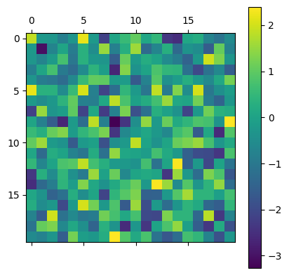
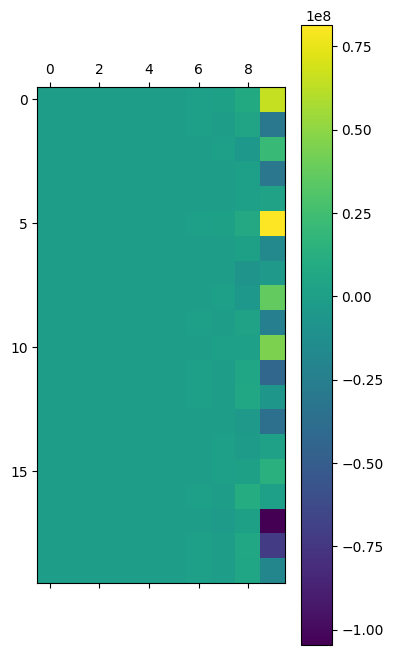
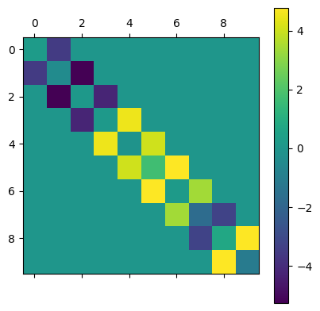
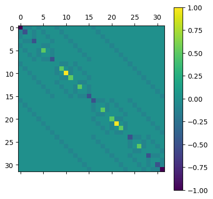
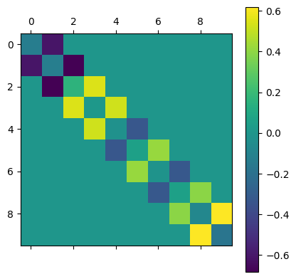

Contents
[116]:
import numpy as np
import matplotlib.pyplot as plt
mat_size = 20
# elems drawn from normal dist
rand_mat = np.random.randn(mat_size, mat_size)
# symmetrize the matrix
ham = (rand_mat + rand_mat.T) / np.sqrt(2)
plt.matshow(ham)
plt.colorbar()
[116]:
<matplotlib.colorbar.Colorbar at 0x132cc5960>

[105]:
class Krylov:
def __init__(self, subspace_size: int, ham: np.ndarray, psi: np.ndarray):
self._subspace_size = subspace_size
self._ham = ham
self._psi = psi
@property
def subspace_size(self) -> int:
return self._subspace_size
@property
def ham(self) -> np.ndarray:
return self._ham
@property
def psi(self) -> np.ndarray:
return self._psi
def gen_krylov_subspace(self) -> np.ndarray:
return np.array(
[
np.linalg.matrix_power(self.ham, n) @ self.psi
for n in range(self.subspace_size)
]
).T
def subspace_projector(self) -> np.ndarray:
q, _ = np.linalg.qr(self.gen_krylov_subspace())
return q
[117]:
psi = np.random.randn(mat_size)
psi /= np.linalg.norm(psi)
[118]:
krylov = Krylov(subspace_size=10, ham=ham, psi=np.random.randn(mat_size))
span = krylov.gen_krylov_subspace()
plt.matshow(span)
plt.colorbar()
[118]:
<matplotlib.colorbar.Colorbar at 0x132e30e50>

[119]:
q = krylov.subspace_projector()
plt.matshow(q)
plt.colorbar()
[119]:
<matplotlib.colorbar.Colorbar at 0x132f17550>

[120]:
plt.matshow(q.T @ ham @ q)
plt.colorbar()
[120]:
<matplotlib.colorbar.Colorbar at 0x13300a320>

[113]:
from tnpy.model.transverse_ising import TransverseIsing
from tnpy.operators import FullHamiltonian
model = TransverseIsing(n=5, j=1, h=0.1)
ham = FullHamiltonian(model.mpo).matrix
plt.matshow(ham)
plt.colorbar()
[113]:
<matplotlib.colorbar.Colorbar at 0x132adf370>

[115]:
psi = np.random.randn(len(ham))
psi /= np.linalg.norm(psi)
krylov = Krylov(subspace_size=10, ham=ham, psi=psi)
q = krylov.subspace_projector()
plt.matshow(q.T @ ham @ q)
plt.colorbar()
[115]:
<matplotlib.colorbar.Colorbar at 0x132d0ded0>

[ ]: